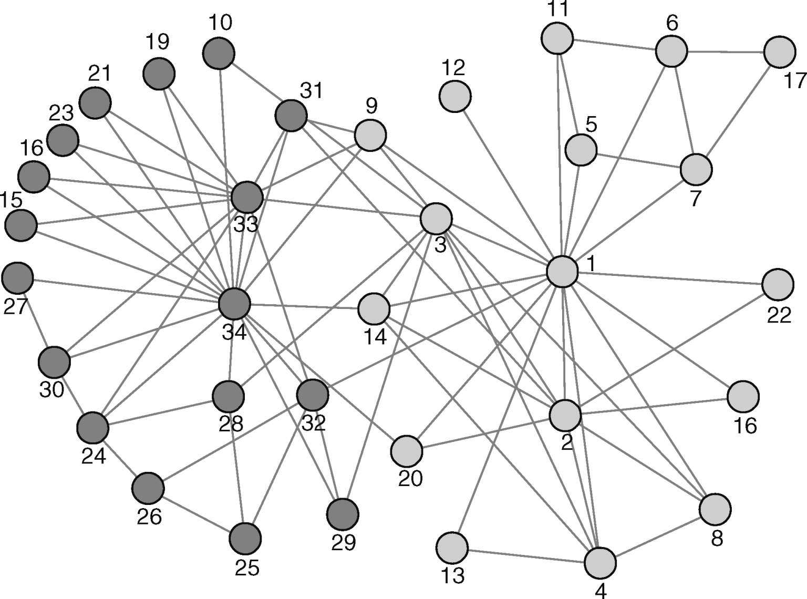

谁是你的朋友？
根据上世纪90年代开展的一些研究，每有一个患有性传播疾病的美国白人，在美国某些地区就有多达20名同病相怜的非裔美国人。持续的种族不平等导致了这一结果。然而，产生如此巨大差异的真正传染机制在一定程度上仍晦暗不明。1999年，社会学家爱德华·O.劳曼和尤思科尤姆发现了一个有趣的证据：性活跃程度较低的非裔美国人（过去一年仅有1位性伴侣者）与性活跃程度更高的非裔美国人（过去一年中有4位或更多性伴侣的人）发生关系的可能性是相同情况下白人的5倍。换句话说，在白人的性关系网络中，不那么活跃的外围群体 某种程度上与活跃的核心群体 彼此隔离。相反，这两个群体在非裔美国人中的关联则更多。这种差异的原因尚不清楚，但其结果却很明确：在第一个网络中，性传播疾病主要在核心群体内部蔓延，而在非裔美国人中，这些疾病也溢出至外围人群。
在本例中，网络节点的度数对于理解这个现象并非最相关的变量。性伴侣数量相同的个体受感染的可能性也不尽相同，这取决于该个体是白人还是非裔美国人。在这样的情况下，仅仅知道你有多少“朋友”（即你所在节点的度数）还不够，还必须知道你的朋友有多少朋友。度数分布为图的大体结构提供了大量信息，比如它是否包含枢纽节点等。然而，度数分布并不能显示图的所有信息。比如，设想两个图具有相同数量的节点和边数：其中的节点可能有着完全相同的度数，但边的分布却可能导致这两幅图完全不同。度数乃顶点的局部特征。想要更加细致地认识网络结构，人们必须深入挖掘，并找到方法来描述节点的周边情况：距其最近的邻点，其邻点的邻点，等等。
在白人的性关系网络中，低度数节点往往与低度数节点相连，高度数节点则与高度数节点相连。这种现象又名相称混合 ：它是同质相吸的一种特殊形式，其中连接数类似的节点往往会互相连接。相反，在非裔美国人的性关系网络中，高度数节点和低度数节点则更容易彼此连接。这被称为不相称混合 。这两种情况都显示了相邻节点在度数上的某种相关性。当相邻节点的度数呈正相关，则为相称混合；反之则为不相称混合。
通常，这些混合模式的存在是网络中某个重要机制作用的结果，这个重要机制可能就是自组织。在随机图中，给定节点的邻点完全是随机选择的：结果，相邻节点的度数之间并没有明确的相关性（尽管图的有限大小可在某种程度上掩饰这一点）。与此相反，大多数真实网络中都存在节点相关性。尽管不存在一般规则，但大多数自然和技术网络往往为不相称混合模式，而社交网络则为相称混合模式。例如，高度连接的网页、自主系统、物种或代谢物常常与其所在网络中连接较少的节点相互关联。另一方面，公司董事长、电影演员和科学文献作者往往与那些连接性与自己类似的人相关联：个体的节点度数越高，其网络邻居的度数也越高。
度数的相称和不相称仅为让节点相互关联发生偏差的大量可能相关性中的一个例子。例如，劳曼和尤姆也证明了，相比于其他群体，有更多的非裔美国人倾向于从自己的社区选择伴侣。因此，当感染进入社区之后，它便被“困”在里面了。单单这种简单的效应便让非裔美国人感染性病的可能性高出美国白人1.3倍。在这种情况下，相关性并非源于节点度数，而是与每个节点内在特性相关的一种同质相吸，这个内在特性即种族身份。另一个例子是体重的相关性：研究发现，相对于与自己体重指数不同的人而言，体重指数相似的人倾向于更频繁地在彼此之间建立社交联系。要注意的是，相关性并不必然就是支持同质相吸的正面因素：比如，在食物网中，边将植物与食草动物、食草动物与食肉动物相连，但绝少将食草动物与食草动物或者将植物与植物相连。
谁是你朋友的朋友？
科西莫·德·美第奇于15世纪带领家族接管佛罗伦萨，人们称他为“难以理解的斯芬克斯”。尽管他绝少公开发表言论，并且也从未公开采取任何形式的行动，但他依旧能够在自己周围建立起强大的党羽，并让自己成为文艺复兴时期最重要城市的国父（pater patriae ）。1993年，社会学家约翰·F.帕吉特和克里斯托弗·K.安赛尔分析了美第奇家族与佛罗伦萨其他权势家族之间的婚姻关系、经济联系和赞助往来。他们发现，科西莫的家族位于众多权贵家族关系网络的中心。更重要者，若无美第奇家族搭线，其他家族多数时候的联系并不多，甚至彼此抵牾。科西莫的克制态度帮助自己建立起了与各家族的联盟和共治关系。
以美第奇家族为中心的网络便是自我中心网络 的一个实例，在这种网络中，一组节点与中心节点（自我节点）直接连接，这组节点彼此之间也相互连接。每当后一种连接丢失一个（也就是自我节点的两个邻点彼此不再相邻），该网络就会出现结构洞 。科西莫的网络布满了结构洞，其家族能够用它们实行分而治之（divide et impera ）策略：美第奇家族被视为许多冲突的第三方，那些家族不得不要求美第奇家族调节他们彼此的关系。
然而，对个人而言，周围布满许多结构洞并不总是件好事。根据2004年的一项研究，朋友之间不构成朋友关系的青春期女孩，其自杀概率为相反情况的两倍。这个发现的可能解释是，当事人会暴露在无关朋友的冲突之中。另外一个例子来自工会：若工人之间的联系网不存在结构洞（即自我节点 被大量相互关联的节点包围时），则会形成一个强大、协调良好、交往密切的组织。一般而言，结构洞的不同模式表示不同的情况。例如，专业领域的科学家常常与该领域其他科学家相互联系，后者可能彼此也有联系。另一方面，高度跨学科领域的科学家则很可能与不同领域的科学家都有联系，后者并不必然彼此关联。
在所有这些情况下，你有多少朋友（即你的节点度数），或者他们是谁（比如他们的节点度数与你的相似还是不同）都不重要。重要之事在于，你朋友的朋友是谁：特别是，你的朋友彼此之间是否也是朋友关系。这个概念通常被称为传递性 或集聚性 。让我们考虑有着两位朋友的一个人：他们三人构成了连接三元组 。如果此人的两位朋友彼此也是朋友，那么他们三人同样构成了可传递三元组 ，或者三角形 。网络中的三角形数量与其中的连接三元组总数的比值便是该网络集聚系数 的基本组成：这个系数衡量了该图中的三角形密度及其总体的传递性。而在随机网络中，某节点最近邻点之间的连接与任意其他两个节点间的连接具有同样的随机性。因此，这些图仅有纯粹随机连接的边所组成的三角形。另一方面，几乎所有现实世界网络的集聚系数都高于其相应的随机网络。这意味着某种重要的过程——可能是某种形式的自组织——在产生这种额外的传递性过程中起到了作用。
许多网络的高度集聚性表明存在着其中“每人都是其他每个人的朋友”这样的群体。乍一看，这幅图景似乎与网络的小世界属性相矛盾：网络是否是个“开放”世界，其中每个人之间都仅隔几步之遥？或者说网络就是紧密编织的分离群体的总和？现实中，这两个特性之间并不存在真正的矛盾：通过仔细观察沃茨–斯托加茨模型就能看出这一点。这个模型以一圈节点为开端，每个节点都与其最近和次近的邻点相连，就像遥远的村庄与其邻村交换货物一样。这是个完全集聚的结构，其中，任一村庄的所有商业伙伴也互为商业伙伴。然后，该模型为随机选择的节点开放一些连接：少数村庄开放了前往其他遥远村庄的路径，并将货物带往该处，且拒绝与其邻居做生意。少量路径便足以陡然降低任意两个村庄之间的距离，但另一方面，我们可以认为当地紧密的商业结构已遭到破坏，也即，当地的集聚性下降了。然而，沃茨和斯托加茨发现，集聚性的降低并不像平均距离的减少那般明显。实际上，为了使传递性显著下降，人们必须重连几乎所有节点。此时，网络中仅剩随机连接了，而我们并不会期待随机图中存在高集聚性。此处的关键信息在于，网络（既不是有序网格，也非随机图）可以同时具备高集聚性和较短的平均节点距离这两个特征。
集聚性的另一个有趣之处在于，几乎所有网络中某节点的集聚性都取决于该节点的度数。通常，节点度数越大，集聚系数便越小。低度数节点往往属于彼此连接良好的局部网络。类似地，枢纽节点与众多节点连接，这些节点并不会直接地彼此连接。例如，互联网中低度数的自治网络常常属于高度集聚的区域网络，且经由全国主干网彼此连接。许多网络中都可能出现类似的结构，其中集聚性会随着节点度数的增加而呈下降趋势。
谁是你朋友的朋友的朋友……？
金钱会在一定程度上带来幸福，但周围快乐的人却能给人们带来更多的幸福。根据1984年的一项估计，每年多挣5 000美元会增加2%的幸福感，而社会学家尼古拉斯·克里斯塔基斯和詹姆斯·福勒2008年的一项研究表明，拥有一个快乐的朋友则会提升人们15%的幸福感。两位社会学家调查了来自马萨诸塞州弗雷明汉的超过12 000名居民的主观幸福感。不仅如此，他们还绘制了这些人之间的朋友、配偶或兄弟姐妹关系。通过绘制这个关系网，二人发现，联系紧密的人常常有着类似的感觉：幸福的人往往聚在一起，另一方面，不幸之人亦是如此。克里斯塔基斯和福勒甚至还发现了更多有趣的证据。个人的幸福会受到其非直接相邻的人的幸福程度的影响。两步之外（朋友的朋友）的“幸福效应”约为10%；三步之外（朋友的朋友的朋友）则为约6%。这种效应仅在第四步就消失了。这两位社会学家和其他科学家也在肥胖、吸烟习惯以及口头建议（比如找一个好的钢琴教师或一个好的宠物之家）等方面发现了类似的结果：在所有这些情况下，三度空间之外的影响或信息会对个人起作用。人们在不同社会过程中发现的这个三度空间规则 是超二元扩散 的一个例子，即超越连接最近邻居的二元 关系的扩散现象。在这种情况下，每个节点的度数、其邻点的度数，还有邻点之间的连接都不再重要。影响超越了各节点最近的连接圈。实际上，在许多现象中，这种影响甚至超过了三度空间。例如，高度传染性疾病可形成更长的传染链；类似地，营养物则可扩散至整个食物网。
在这种动力机制中，节点的重要程度取决于通过它的链条数量。为了捕捉这个观点，社会学家林顿·C.弗里曼引入了节点的中介中心性 这一概念。取某网络中的所有节点对，数一数关联它们的最短路径数。节点的中介中心性基本上就是穿过该节点之最短路径占所有路径数量的比例。这一比例越高，相关节点的中心性就越高。按照这种测量方式，美第奇家族便是15 86世纪佛罗伦萨家族中最具中心性的一个。在这种情况下，中介中心性便可衡量减缓节点流或扭曲通过链条的可能性，它以这种方式服务于中心节点的利益。一些研究表明，企业在经济网络里的中心性很好地预示了它的创新能力（根据获得的专利数衡量）以及财务业绩。有趣的是，1980年到2005年间，东亚国家在世界贸易网络里的中心性经历了大幅增长，而大多数拉美国家却呈下降趋势。然而，这两个地区的贸易统计显示出类似的模式：宏观经济统计并未很好地追踪二者发展的巨大差异，而基于网络的方法却捕捉到了这一点。根据1965年的一项研究，莫斯科在中世纪便成为俄罗斯中部河流运输网络最具中心性的节点。很可能，这为其未来的重要性打下了基础。
中心节点通常充当桥梁或瓶颈：它们几乎是网络交通中的必经站点。因此之故，中心性乃是对网络节点的负荷的估计，前提是大多数节点之间的连接都经过最短路径（情况并非总是如此，但这是个很好的近似情况）。由于同样的原因，中心节点的损坏（例如，某个中心物种灭绝或某个中央路由器被破坏等）会从根本上影响相关网络的节点连接数。根据想要研究的过程，还可以引入中心性的其他定义。例如，接近中心性 计算某节点到其他所有节点之间的距离，而抵达中心性 则将网络内所有节点分解为经由一步、两步、三步等不同步数抵达的节点。此外中心性还有一些更为复杂的定义。
许多现实世界网络的中心性特征是它们异质性的深层标志。许多真实世界的网络会表现出异质分布特有的长尾。平均中心性并非对任一节点的有效估计，因为这一量值在平均范围内变化很大：少数节点便是网络中几乎所有最短路径的主要瓶颈，整个中心性较低的节点层级都要经由他们向下。考虑到中心性较高节点的重要性，我们很自然地会问它们是否与网络的枢纽节点相同。很多情况下，事实的确如此。例如，高度连接的自治系统也可作为区域网络的桥梁；多义词因与许多其他语词连接，从而将语言中的不同领域联系在一起。但这并非普遍规律。机场便是一个显著的例外：其中，某些低度数机场具有特别大的中介性。2000年，中心性最高的机场为巴黎机场，它是关联着250多座城市的枢纽节点。中心性次高的机场则为位于阿拉斯加州的偏远的安克雷奇，它是一个仅与40座城市连接的中等大小的机场。其他类似机场也出现在最具中心性的机场名单上。这种异常又该如何解释？阿拉斯加州有许多飞国内航线的机场，但安克雷奇是通往美国其他地方的唯一桥梁，因此，许多航线都穿过该机场。这种异常是局部地区机场密度高，却少有通往国外的航线的结果。
你属于什么群体？
1972年，美国一所大学俱乐部的两名空手道教练发生了激烈的冲突，从而决定将他们的俱乐部一分为二。这件在世界上多数人看来不值一提的小事却成了社会学家韦恩·W.扎卡里眼中的一座金矿。1977年，他发布了一项关于此事的开创性研究，并在其中提出了一个新奇的观点。
1970年，空手道教练希先生要求俱乐部主席约翰·A.提高课程价格，以提供更好的薪酬。而他所得到的只是拒绝。随着时间的推移，整个俱乐部都因此事而产生了分歧，两年后，希先生的支持者们在其领导之下组建了一个新的空手道组织。在此期间，扎卡里搜集了空手道课程、会议、派对以及俱乐部成员的聚会等相关信息，并将那些在俱乐部之外还见面的人定义为好友。这时，他便能为该俱乐部绘制一幅精确的友谊网络图谱了：所得图形的结构明显围绕两位教练而分为两个群体，每个群体里的人都互为好友且与其中一位教练交好，而两个群体的成员之间却很少往来（图11）。当俱乐部一分为二，人们几乎都沿区分两个群体的界线站队。

图11 人类学家韦恩· W.扎卡里研究的空手道俱乐部中的友谊结构能让我们预测到该群体会一分为二
仅仅基于网络结构本身，扎卡里的方法便能够几乎完美地预测俱乐部的分裂。从那时起，研究人员便一直致力于找出能够识别网络中的社区 或模块 的通用办法。在扎卡里的例子中，这些社区或模块仅通过查看图形便能看出，但在其他复杂得多89的情况中，人们尚未发现通用的解决方案。所有真实世界的网络都在一定程度上显示出模块化特征。很明显，阿拉斯加机场便是机场网络结构中一个特定的模块，其他内部连接良好却与外部没有连接的区域也是如此。食物网也分为若干不同的分部 ，即那些内部互动更加频繁而与其他物种联系较少的物种群体。社交网络也分为不同的团体 ：例如，针对青少年的研究表明，他们的行为强烈地受其所属群体的影响。神经网络常被划分为对应特定功能的大区块。基因调控网络则被分为不同的子网络，后者与特定的功能或疾病相关联。度数、相关性、集聚性以及中心性都提供了单个节点及其紧邻的周遭环境和节点在整个网络中的相对地位等信息，但它们并不体现整个图形所分解成的各别结构。
模块的更简单形式是模体 ，它是少数节点在整个网络中重复出现的连接模式。在食物网中，我们经常会发现某种菱形结构：例如，某种食肉动物捕食两种不同的食草动物，后两者食用同一种植物。另一种常见的模体是三个物种的简单链条：大鱼吃小鱼，小鱼吃虾米。这些模式并非纯粹概率的结果：模体在真实的食物网中出现的频率比在其随机对照网络中高出很多。通常，在大型网络中，人们可以区隔出许多可能为候选模体的由节点和边组成的子集。然而，只有当给定的子图出现在某网络中的频率高于其随机对照图时，该子图才能被认为是相关模体。在万维网中，一个十分常见的例子是二分团 ：它由两组网站组成，其中一组的所有网站与另一组所有网站之间相互连接。通常，这种模体能够确定一组有着相同兴趣的“粉丝”群体（比如有关漂流的博客），并指向他们的“偶像”（例如漂流杂志的网站等）。调控基因的网络则几乎完全由模体构建。当大肠杆菌处于应激状态时，特定的基因回路会感知到应激状态，并协调某些蛋白质的产生。这些蛋白质联合起来形成鞭毛，这种不断摆动的尾状物能让细菌游走以寻找更好的环境。相同的遗传回路，即协调前馈环还存在于许多其他细菌和一些其他微生物体内。演化似乎已经因为特定模体的最优特性而选择了它们（例如，因为它们能用更少量的所需基因来执行某项功能）。此外，模体机制的明显优点是模体可以组合产生新的功能，而其中某个模体受到破坏也不会影响到别的模体。
模体乃某种小规模、局部的重复性模块。但当人们考虑社区时，他们通常意在发现网络中的大型分区，比如食物网的区划、在线社区、学科领域等等。这些结构并不表现出规律性的重复模式。如果我们掌握了某些线索，比如，假如社区的成员因某个因素而自发确定自己的身份，则相对容易找到它们。这个因素可能是社区内所有成员添加到他们博客上的小饰物、共同的着装方式等。然而，多数时候这种信息既非现成也不明确，我们必须深入挖掘网络结构以找到模块。社区识别的总体目标为发现那些内部连接比彼此之间连接更为紧密的节点集，就像空手道俱乐部网络中呈现的那样。口头表述是很容易的，但将此概念转换为数学表达却很难，以至于人们尚未发现确切的社群检测方法。一些方法可以聚合节点以满足最优性准则。其他方法则可将网络拆分为群组，然后再进一步将群组进行拆分，接着再进行拆分，进而创建一个嵌套社区的谱系树。还有一些方法在节点之间放置假想的弹簧，然后查看系统松弛之后所形成的节点群集。一般来说，还有很多其他方法上的选项。有一种有趣的技术聪明地利用了网络拓扑学，其基础在于计算边介数 ，也就是找出多数最短路径所通过的边。具有最高边介数的连接类似于在格兰诺维特的研究中连接原本相互分离之群体的弱连带。如果去掉一些高介数的边，那么，网络就会分裂成一定数量的孤立节点群集：它们便是恰当的候选社区。我们还可以继续去掉网络中一些介数较高的边，以找出嵌套在更大结构中的更为精细的结构。
社区发现方法的一个有趣应用是对美国政治博客圈的分析。物理学家拉达·阿达米克在民主党人和共和党人的博客间发现了清晰的分隔。其得出的网络结构显示，这两大党的阵营绝少相互关联。此外，民主党的博客比共和党的博客更缺乏凝聚力。例如，在此博客圈的堕胎讨论专区中，反对堕胎的博客比支持堕胎的博客联系更为紧密。因此，在线造势运动更可能在前者的博客中得到传播。另一项研究分析了美国学校中的学生社区特征，借此了解种族是否会塑造社交网络。在种族非常多元和十分同质的学校中，这一因素似乎都是无关紧要的。相反，在种族多样性处于中间值时则能看出隔离特征。在代谢网络中，人们已经发现了与特定功能相对应的社区（碳水化合物代谢，核苷酸与核酸代谢，蛋白质、肽和氨基酸代谢，脂类代谢，芳香族化合物代谢，单碳化合物代谢和辅酶代谢等）。最后，公司股票则在价格相关性的基础上聚类，人们能从中发现与银行、矿业、分销、金融等各业务领域相对应的模块。
将社区定义为“内部联系比外部联系更为紧密”的子图非常普遍，但这种做法并未涵盖某些特定的模块。想想朋友间的电话通信链条，其中第一个呼叫第二个，第二个呼叫第三个，以此类推：根据上述定义，这种链条极有可能不会被归类为社区。另外一个例子则是同行业竞争者的网页：显然，他们并没有动力相互连接，尽管他们明显属于同一社区。此外，真实世界的社区比密集的节点群集复杂得多。多种划分可能同时出现；国籍、社会阶层、性别、工作、政治观念统统都可用来对同一群人进行分类。而且，社区之间可能互相重叠：一个人可能同时从属于多个国籍或隶属关系。最后，嵌套社区也可能存在：例如，地域身份从属于国籍。
尽管过于简化，但图示法仍然能够捕捉到系统的诸多相关特征。若我们仔细查看图，便会发现大量相关信息，而运行的复杂测算越多，便会呈现越多细节。真实世界的网络几乎在任何时候都会偏离其随机对照网络，这意味着其中存在某种嵌入的秩序。同样，所有这些网络都未经过设计：偏离很可能产生于自组织过程。目前，在图的结构中寻找新的规律并揭示其潜在机制是网络科学仍然面临的一些挑战。